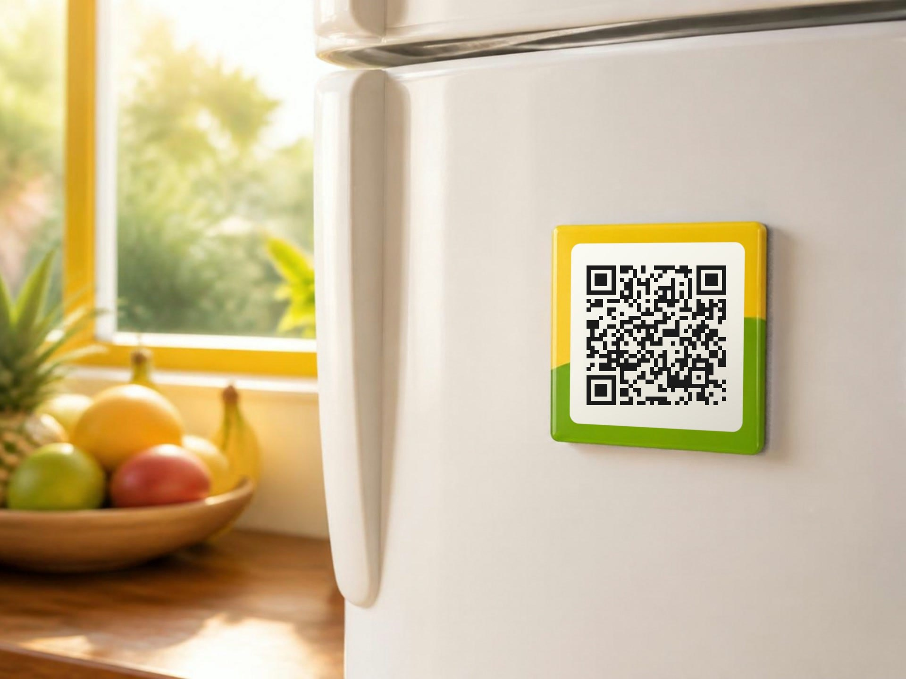

Pedir con GPS
Ubicación exacta por GPS o moviendo el mapa, con los taxis libres a la vista; destino por búsqueda o entre los lugares de Sopó, y viajes programados.
TaxiCun, la app de taxis de Cundinamarca, con el nombre de Tax Pionono en Sopó y, al salir, sus colores y sus conductores. La demo ya está hecha: la pueden probar hoy.
Escanee y abra su demoApunte la cámara del celular al código
Preparada por interOS para Tax Pionono
1 de octubre de 2026
Se acabó llamar uno por uno para ver quién está libre. En TaxiCun el pasajero ve cuántos taxis de Tax Pionono están en línea y libres cerca. Pide y le llega el más cercano: menos llamadas a la central y menos servicios perdidos.
El pasajero recibe un aviso en cada paso del servicio
Ubicación exacta por GPS o moviendo el mapa, con los taxis libres a la vista; destino por búsqueda o entre los lugares de Sopó, y viajes programados.
Registro del pasajero, código de abordaje de 4 dígitos, datos del conductor con su móvil y placa, compartir el viaje por WhatsApp, botón SOS (123) y calificación mutua.
El valor se ve antes de pedir, con tarifa fija a los destinos de siempre y recargos avisados. Y si la empresa quiere: −10 % al programar con 24 h y cada 10 viajes, el siguiente al 50 %.
El conductor muestra un QR al terminar y el pasajero paga desde su banco o billetera, o en efectivo. En la demo es de prueba; en producción va con un proveedor autorizado.
Solicitudes con cuenta regresiva, navegación con Google Maps o Waze, código del pasajero, cobro con QR o en efectivo, ganancias del día y documentos del vehículo.
Un QR en cada taxi, neveras, restaurantes y conjuntos abre TaxiCun con la empresa y dice de qué móvil llegó cada usuario. Y una web propia con el botón para pedir.
| Tema | Apps grandes | TaxiCun con Tax Pionono |
|---|---|---|
| El cliente | Queda en la plataforma | Sigue siendo de la empresa |
| Lo que cuesta | Del 10 al 25 % de cada viaje | 1,9 % o $900 al día por taxi |
| La marca | La de la plataforma | La suya, dentro de TaxiCun |
Dos apps con la misma marca: la del pasajero, para pedir el taxi, y la del conductor, para recibir y atender los servicios. Moderna, sencilla y con botones grandes, fáciles de tocar en la calle.
Pruébenla desde el celular: apunten la cámara a cada código (TaxiCun abre con Tax Pionono)
La demo ya trae 22 lugares de Sopó y 8 destinos con tarifa, tomados de OpenStreetMap y con distancias medidas por carretera. Algunos ejemplos:
Los valores de las rutas son de ejemplo: antes de salir se cambian por las tarifas oficiales de la empresa.

Para los pasajeros la app es gratis: solo pagan su viaje. La empresa elige el plan que más le convenga.
1,9 %de lo que se facture en el mes por la app
Si en el mes se facturan $10.000.000 por la app, son $190.000.
Solo$900al día por taxi · $27.000 al mes
Con 20 taxis: $540.000 al mes ($18.000 al día)
Con 50 taxis: $1.350.000 al mes ($45.000 al día)
La salida en Google Play y App Store depende de la revisión de las tiendas. Mientras tanto, sus pasajeros pueden usar TaxiCun desde el navegador, con el enlace y los stickers QR.
Valores antes de IVA. El Plan A se calcula sobre el valor de los servicios pedidos y terminados en TaxiCun en el mes (en efectivo o con QR), no sobre todo lo que factura la flota. Lo paga la empresa en una sola cuenta mensual. La propuesta final se acuerda con la empresa.
Para confirmar con Tax Pionono: nos ayudan con estos datos y TaxiCun queda con su información oficial.
Oscar Bernal
Contacto comercial · interOS
info@taxicun.comEscríbanos y agendamos la reunión: en 30 minutos la ven funcionando.